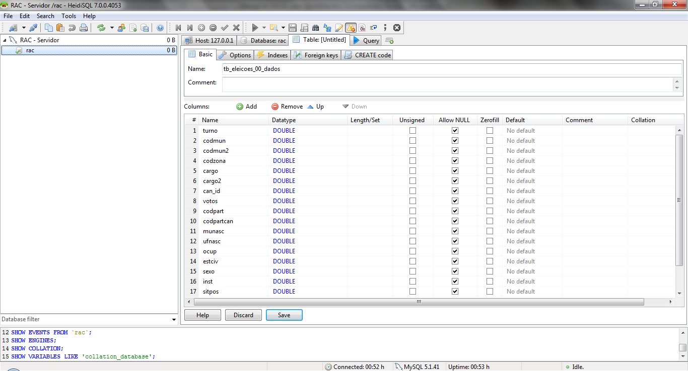
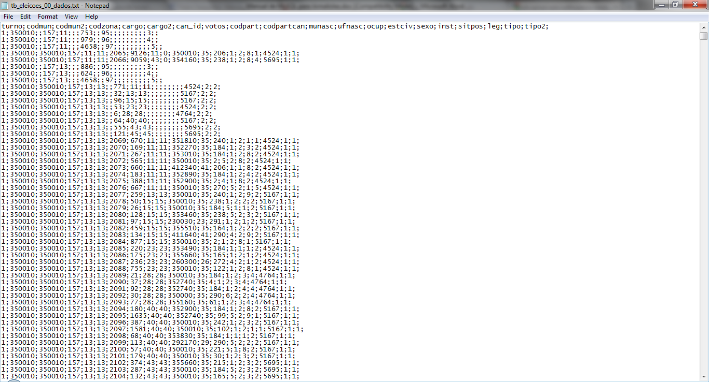
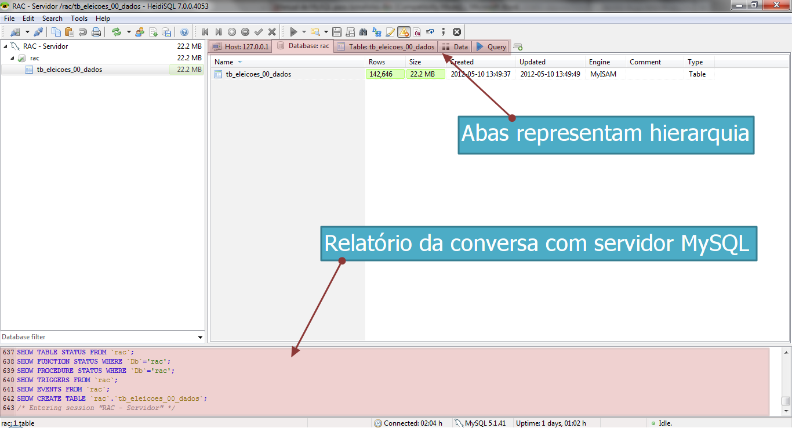
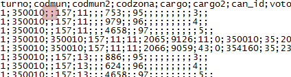
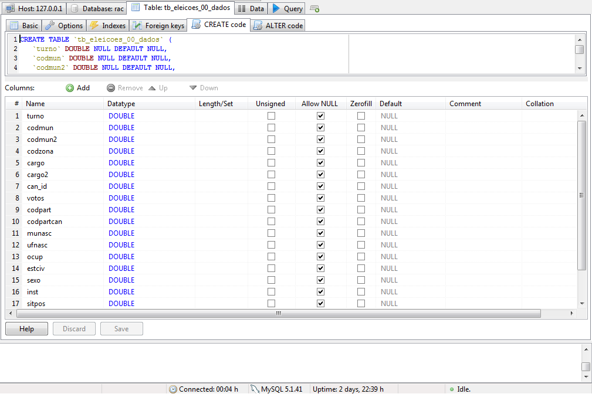

Como importar os nossos dados
Agora que temos os dados desejados, precisamos colocá-los dentro de nosso ambiente. Inicie o servidor MySQL e conecte-se pelo HeidiSQL.
Apesar de ser mais flexível, esse sistema de banco de dados não foi desenvolvido pensando em facilitar a importação de dados. Normalmente, quando programadores o usam, as tabelas são criadas apenas uma vez e essas mesmas estruturas são reaproveitadas por muito tempo. De forma que teremos um pouco de trabalho quando formos importar dados para tabelas novas.
Se quiser pular a importação de dados, você pode pegar o atalho.
Passo-a-passo
Sempre que quisermos colocar uma nova tabela (ou planilha) de dados em nosso MySQL, precisamos primeiro criar a estrutura dela manualmente. Esse trabalho não pode ser dispensado, uma vez que o servidor precisa que sejam explicados para ele os tipos de dados que cada coluna receberá: basicamente números ou texto.
Clique com o botão direito do mouse sobre o banco de dados “rac” e selecione “Create new” -> “Table”. Agora, você vê a interface para criar tabelas. Em “Name”, escreva “tb_eleicoes_00_dados”. Abaixo, em “Columns”, clique em “Add”. Agora, você pode escrever os detalhes da primeira coluna. Volte ao Calc e copie o nome “turno”, correspondente à primeira coluna. Também verifique se essa coluna contém apenas números ou apenas texto. No caso, são apenas números. Coloque o nome da coluna em “Name” e em “Datatype”, escolha “Double”.
Nosso sistema de banco de dados é compatível com vários tipos de dados, mas não precisamos entrar nos pormenores de cada tipo. Basta dizer que sempre que você quiser armazenar números na coluna, escolha “Double”. Sempre que quiser armazenar texto, escolha “Text”.
Vale a pena reiterar que essa escolha de tipos de dados só serve para cada coluna criada e não para a tabela inteira. De forma que em uma mesma tabela, podem conviver textos e números, naturalmente.
No entanto, se uma mesma coluna combinar números e texto, você deverá escolher “Text” como o tipo de dado, mas enfrentará dificuldades se quiser fazer cálculos com os números dessa coluna. Em tabelas bem feitas pelas fontes, essa deve ser uma situação incomum.
Clique em “Add” novamente e repita o processo para criar as próximas colunas.

Todas as colunas dessa tabela contém números, então todas as 20 colunas serão “Double”. Clique em “Save”, logo abaixo das colunas, para criar a tabela com as características especificadas.
Agora, estamos prontos para importar os dados. No menu superior, clique em “Tools” e a seguir em “Import CSV file”.
Localize em “Filename” o arquivo “tb_eleicoes_00_dados.txt” que havíamos aberto pelo Calc. Em “Options”, mude o campo “Ignore first” para “1”. Isso fará com que o servidor não tente importar a primeira linha do nosso arquivo. Não queremos isso, pois ela contém apenas os nomes das colunas e já colocamos isso na tabela.
Em “Control characters”, você deve explicar para o servidor como o arquivo CSV está formatado, da mesma forma que fizemos com o Calc. Se estiver em dúvida, você também pode abrir o arquivo no Bloco de Notas para ver diretamente quais caracteres agem como separadores de campos e linhas.

Em “Fields terminated by”, você deve especificar como está indicado o final de cada campo (conteúdo de cada célula da tabela). No caso, ponto-e-vírgula. Os dois itens seguintes, podem ser ignorados para nosso uso. Em “Lines terminated by”, você precisa dizer como o arquivo indica o final de uma linha da tabela e o começo de uma nova. O campo já está preenchido com “\r\n”. Essa notação significa “quebra de linha”, ou seja, cada linha está separada da próxima e da anterior por uma “quebra de linha”. Essa é a forma como naturalmente separamos linhas.
Em “Destination”, você deve especificar para qual banco e para qual tabela vão os dados. Escolha “rac” e “tab_eleicoes_00_dados”. Agora, clique em “Import!”. Você deve ser alertado sobre 64 “warnigns and/or notes”. Clique em “Cancel” e volte à janela principal.
Tratamento de erros
Apesar da impressão ruim, a verdade é que nossos dados foram sim importados e agora você precisa aprender a desenvolver uma atitude crítica sobre falhas que softwares venham apresentar enquanto você os usa. Clique sobre o nome da sua tabela e aperte “F5” para atualizar a visualização. Você verá que agora ela tem 142.646 linhas e ocupa um espaço total de 22,2 MB.
Observe também que, como o HeidiSQL está em inglês, ele troca os papéis de vírgulas e pontos nos números. Fique atento a isso.
Agora, vamos tentar entender os erros apresentados na comunicação com o servidor.

Na parte de baixo da janela, você tem acesso à comunicação detalhada entre o HeidiSQL e o servidor MySQL. Lembre-se de que o HeidiSQL é apenas uma interface gráfica para facilitar o uso de nosso servidor. Ele traduz em botões, listas e tabelas comandos mais complexos que são escritos para o servidor e retornados por ele. No entanto, e apesar de toda essa ajuda, precisaremos nos debruçar sobre esses comandos muitas vezes.
Vá ao relatório da conversa, na parte de baixo do HeidiSQL, e suba um pouco a barra de rolagem. Estamos procurando pelos 64 erros que o programa disse ter sofrido. Você encontrará várias linhas com textos similares ao seguinte:
/* Warning (1265): Data truncated for column 'codmun2' at row 1 */
No caso, o erro “Data truncated” ocorrei porque houve um conflito entre o tipo de informação que o campo na nossa tabela MySQL esperava e a informação que estava de fato em nossa tabela de CSV. Verifique o que temos na coluna “codmun2” da primeira linha de dados do CSV.
Esse campo está vazio. Você pode perceber isso ao ver que o elemento separador de campos, no caso o ponto-e-vírgula, aparece duas vezes seguidas, sem especificar nenhum dado.

Quando construímos a tabela no MySQL, dissemos que todos os campos conteriam “Double”, que designa um conteúdo numérico. Na perspectiva de nosso servidor, um campo vazio não é um número e, portanto, não pode ser armazenado no espaço em que se esperava um “Double”. Essa é a origem dos erros que vimos.
Se você checar a forma como a tabela está salva no MySQL, vai notar que os campos vazios foram transformados em “0”. Essa mudança é tolerável e não deve afetar a forma com lidamos com nossos dados.
Após observarmos criticamente a parte técnica das falhas, precisamos pensar se é correto haver tantos campos vazios em nossos dados originais. Isso pode ser tanto um erro do banco de dados oferecido pelo governo, como um comportamento possível e esperado para algumas dessas linhas. Consulte o arquivo “Dicionario_eleicoes.txt” para entendermos o que é cada variável e pensarmos se há uma explicação para os campos estarem vazios.
“CODMUN2” na tabla se refere ao código do município onde determinado candidato recebeu votos. Pode ser que, se esse campo estiver vazio, o candidato referido não tenha recebido nenhum voto num dado município.
Parte de nosso trabalho para minerar informações em bancos de dados sempre será conseguir interpretar adequadamente as tabelas. Seus significados nem sempre parecerão coerentes ou mesmo corretos. É preciso ser crítico quanto a isso e estar pronto para questionar a fonte das informações.
Conforme importarmos mais tabelas, e começarmos a fazer cruzamentos, o papel de cada uma ficará mais claro.
Se você passar por um erro similar ao seguinte, certifique-se de que não se esqueceu de criar alguma das colunas de tabela antes de importar os dados.
/* Warning (1262): Row 1 was truncated; it contained more data than there were input columns */
Padrões
Com paciência em um pouco mais de trabalho, você logo vai reparar que o esforço de importar essas tabelas é bem menor do que parece. Isso porque os grupos de tabelas com “dados” e “variavel” nos nomes seguem padrões bastante rígidos em suas estruturas de colunas. Elas têm os mesmos nomes e trazem conteúdos com os mesmos tipos. Nós podemos tirar proveito disso para acelerar nosso trabalho.
Selecione a “tb_eleicoes_00_dados”. Como a estrutura dela se repete em todas as tabelas com “dados” no nome, vamos copiar os dados estruturais e reusá-los para facilitar nosso trabalho.

Após selecionar a aba “Table: tb_eleicoes_00_dados”, clique sob a aba “CREATE code”, logo abaixo. Esse código pode ser usado para criar novamente uma tabela exatamente igual a essa.
Copie e cole para o bloco de notas. Leia atentamente as expressões e procure entender o que elas significam. Você não vai precisar memorizar os detalhes desse texto ou mesmo escrevê-lo sozinho em nenhum momento. Para isso, temos o HeidiSQL. Mas agora, como vamos criar muitas tabelas idênticas estruturalmente, podemos nos aproveitar desse código para reproduzir isso rapidamente.
Mude o nome da tabela que será criada com esse código para “tb_eleicoes_02_dados”. Copie e cole o novo texto na aba “Query” e pressione o triângulo azul logo acima das abas para executar o código. Se preferir usar um atalho de teclado, pressione “F9”.
Repita esse processo para crias as tabelas “dados”. Após construir as estruturas, importe os arquivos CSV em suas respectivas tabelas como fizemos com a primeira.
A mesma padronização ocorre entre as tabelas com “variavel” no nome. Crie a primeira estrutura e replique o código para fazer as outras mais facilmente.
Observe que em tabelas com textos, você precisará saber de antemão qual é o “encoding” correto a ser usado. Assim como no Calc, será preciso um pouco de tentativa e erro, mas as mais prováveis no Brasil costumam ser “UTF-8” e “latin1”.
Apesar de ser sempre bom mantermos esses cuidados, é bom saber que todos os arquivos que baixamos são “latin1” e, como criamos o banco de dados já com esse “encondig”, não será necessário nos preocuparmos com caracteres especiais ao importar cada arquivo.
Importe as tabelas restantes seguindo os conceitos que apresentamos até agora.
Por fim, precisamos escolher índices (“indexes”) para todas elas. Esse recurso servirá para otimizar a execução de “querys” complexas.
Para processar dados com mais eficiência, o MySQL precisa ter um “mapa” dos dados armazenados. Após formatar todas as tabelas, você deverá clicar na aba “indexes” de cada uma e escolher uma das colunas para assumir esse papel. Clique no campo escolhido com o botão direito do mouse, escolha “Create new index” -> “KEY”. Clique em “Save” abaixo. O campo deve ficar com um símbolo de chave verde ao lado do nome.
O índice de uma tabela deve ser um campo que você pretenda usar como parâmetro para ordenar, agrupar ou buscar linhas. Para poder fazer uma escolha assim, é necessário já conhecer suas tabelas e a forma como elas se relacionam.
Se, após ler o dicionário de variáveis, você ainda não se sentir confortável para fazer essa escolha, pode deixá-la para qualquer momento mais tarde. Apenas lembre-se de que, enquanto não os tiver escolhido, seu banco de dados não será tão rápido quanto pode ser.
Neste exercício, escolha “can_id” como índice das tabelas com “dados” nos nomes e da tabela “candidatos”. Em “tb_formato_valor”, escolha “fmt_cod”; para “partidos”, uma boa opção é “codpart”; e, finalmente, fique com “zonas” da tabela “zona”. As tabelas restantes são pequenas e dispensam a escolha de índices.
Um atalho
Se preferir pular a parte de transferência dos dados para o servidor, você pode baixar o arquivo que clona o banco de dados que estou usando para fazer este tutorial. Baixe o SQL em formato compactado clicando aqui.
Para importar, em “Tools”, escolha “Load SQL file”.
Sempre que quiser fazer backup dos seus dados, você pode usar o menu “Tools” e escolher “Export database as SQL”. O arquivo resultante será uma cópia exata de todas as estruturas de tabelas e seus conteúdos.